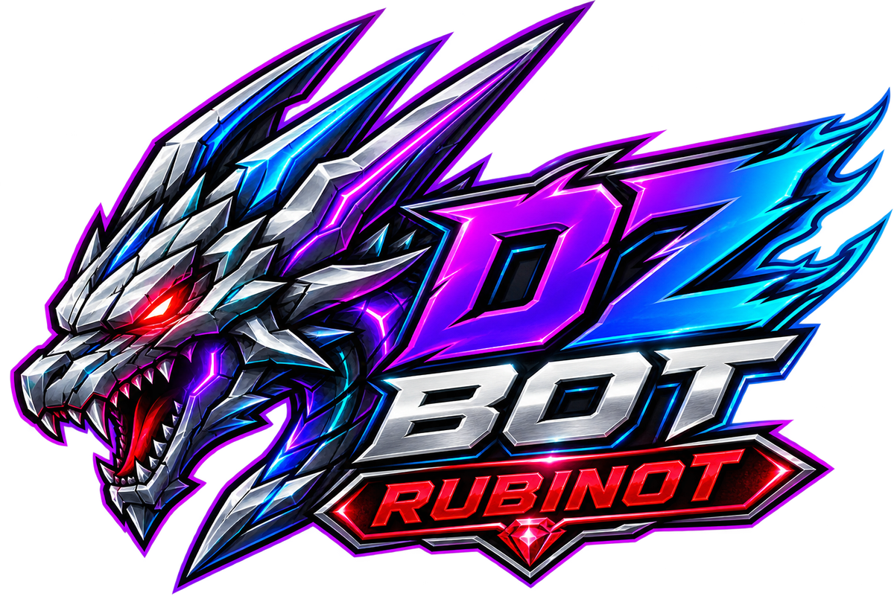

PLAYER TRACKER
Chega de caçar player no braço.
Friend entrou? Enemy saiu? PT está pronta? O Discord te responde.


Falar com vendedor →Chega de jogar com informação espalhada. O DZbot transforma sinais do RubinOT em contexto útil para a sua guild ou PT agir mais rápido, caçar melhor e perder menos tempo.
Fizemos um pente-fino: cada módulo agora aponta para um conteúdo coerente com a função. Quando não existe print real de boss, o site usa uma visualização contextual — nunca uma landing page antiga.
Status, sessão, level e contexto operacional chegam no Discord sem consulta manual.
Removemos o track quebrado. Os slides ficam empilhados e alternam por estado ativo — sem risco de sumirem para fora da tela.
Friend entrou? Enemy saiu? PT está pronta? O Discord te responde.
Radar e contexto para priorizar bosses relevantes — sem fingir certeza.

Top por vocação, watch e interesse na mesma experiência.

PvE/PvP, responsável e histórico recente do personagem.

Online, evolução, mortes e pressão condensados automaticamente.

O problema não é só voz. É depender de voz + sites + memória + mensagens soltas para tomar decisão.
Guild, PT, objetivos, rotina, canais e dores.
Você recebe o que realmente gera valor.
Canais, módulos e isolamento por servidor.
O DZbot passa a observar e entregar contexto.
O produto atual é posicionado e configurado para RubinOT.
Não para o fluxo principal. Alertas, resumos e comandos ficam no Discord; links externos aparecem quando agregam valor, como abrir um leilão.
Sim. A implantação é composta conforme a realidade da guild ou PT.
Sim. A galeria usa screenshots reais fornecidos do DZbot em operação, com dados sensíveis ocultados.
Sim. Tabs viram navegação horizontal por toque, carrosséis usam swipe e os efeitos pesados são reduzidos.
Leve o DZbot para o Discord da sua guild ou PT e pare de jogar com informação espalhada.